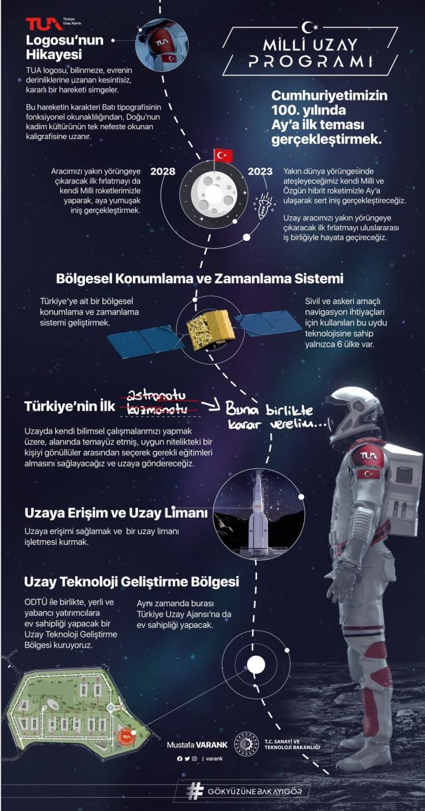

Milli Uzay Programı
Cumhurbaşkanı Erdoğan, Beştepe Millet Kongre ve Kültür Merkezi'nde, Uzay Ajansı tarafından hazırlanan ‘Milli Uzay Ajansı' Tanıtım Toplantısına katıldı. Erdoğan, Türkiye'nin 10 yıllık uzay hedefini 10 maddede açıkladı.
Türkiye dünyaya uzay programını ilan etti! İşte Erdoğan'ın tek tek saydığı 10 madde;
1-Milli Uzay Programı'ndaki birincil ve en önemli hedefimiz Cumhuriyetimizin 100'üncü yılında Ay'a ilk teması gerçekleştirmek.
2-Milli Uzay Programı'ndaki ikinci hedefimiz, yeni nesil uydu geliştirme alanında dünya ile rekabet edebilecek ticari marka ortaya çıkarmak.
3-Milli Uzay Programı'ndaki üçüncü hedefimiz, Türkiye'ye ait bölgesel konumlama ve zamanlama sistemi geliştirmek.
4-Dördüncü hedefimiz, uzaya erişimi sağlamak ve bir uzay limanı işletmesi kurmak.
5-Beşinci hedefimiz 'uzay havası ya da meteorolojisi olarak tabir edilen alana yatırım yaparak, uzaydaki yetkinliğimizi artırmak.
6-Altıncı hedefimiz; Türkiye'yi astronomik gözlemler ve uzay nesnelerinin yerden takibi konularında daha ileri bir seviyeye ulaştırmak.
7-Yedinci hedefimiz ülkemizde uzay sanayii ekonomi sistemini daha da geliştirmek.
8-Uzay programımızdaki sekizinci hedef, bir uzay teknolojisi geliştirme bölgesi kurmak.
9-Dokuzuncu hedefimiz uzay alanında etkin ve yetkin insan kaynağımızı geliştirmek.
10-Uzay Programı'ndaki onuncu ve son hedefimiz bir Türk vatandaşını uzaya göndermek.
DUYURULAR
12.02.2021
www.erenyolcu.works


12.02.2021
En son haberlerimizden haberdar olmak için bizi takip edin!